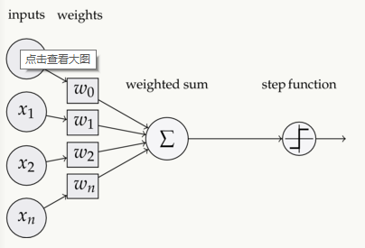
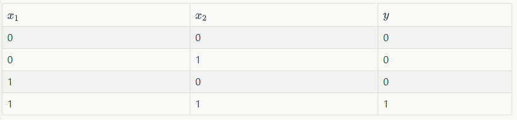

参考: 吴恩达深度学习视频和网上教程
https://www.zybuluo.com/hanbingtao/note/433855
隐藏层大于2的神经网路叫做深度神经网络
一个仅有隐藏层的神经网络可以拟合热河一个函数，但是它需要很多很多的神经元。
而深度网络就是考虑用少得多的神经元就能拟合同样的函数。
为了拟合一个函数，要么使用浅而宽的网络，要么使用深而窄的网络。
后者给节约资源
1. 感知器

1.1 组成
- 输入权值 $w_i$
- 激活函数, 比如阶跃函数，$f(x) = z>0?1:0$
- 输出，整个感知器的公式 $$f(w \cdot x + b)$$
如此，表示的就是一元函数。因为权值的不同取值，由此可以表达出不同的函数
1.2 表示能力
and函数: $w_1 = 0.5, w_2=0.5, b=-0.8$

$$y = 0.5x_1 + 0.5x_2 -0.8$$or函数： $$y=0.5x_1+0.5x_2-0.3$$
线性分类
因为它的数学表示实际上就是一条直线
不能表示一维以上的，比如异或运算1.3 训练
训练的主要想法就是进行更新权值
更新 $w_i, w_0=b$
深度学习： 反向传播是否可以保证收敛？？
强化学习：探索和利用
budget: 总共评估多少个节点
随机深林
算法
Q-learning
蒙特卡罗 + 动态规划
1. 深度学习应用总结
分类
- Standard NN
- CNN
- RNN
- Customl / Hybrid
- structured vs unstructured
- 结构化数据： 组织为表格形式，每个维度都在人类的意义下具有解释性
- 非结构化数据：例如图像或者音频，每个细小的单位是像素点。
从历史的角度来看，计算机很难解释非结构化数据。但是深度学习引入后，对非结构化数据也能解释的很好
- why 深度学习现在火起来？
- 大量数据的产生
- 越来越深的神经网络的规模的上限会表现得越来越好
在小规模数据上，算法的优劣性不好比较。但是在大规模数据上，深度学习是远远领先的
- 发展
- Data
- Computation
- Algorithms:
- 特别地，从sigmoid函数到ReLu函数的改变，因为sigmoid函数在最低端和最上端点的梯度变化非常缓慢，不利于学习。可以是梯度下降得更快
神经网络类比于人的大脑有点过度了，没有必要，因为从某种深度学习只是人的大脑一个非常简化的近似
1.1 神经网络与深度学习
- 二分类
- Logistic Regression
目标改变了，是从概率上来约束，即希望$P(y=1|x)$最大，此时认为该算法是最优的
1.5 序列模型 Sequence
https://mooc.study.163.com/learn/2001280005?tid=2001391038&_trace_c_p_k2_=a561339e0cbf45b491dd9e12104a8641#/learn/content?type=detail&id=2001771052
序列模型是什么？ 其实，从某种意义上说，定义很简单。就是输入和输出的是序列。
从某种意义上感觉，就是原本的数据是输入有很多维特征，而现在是这些维特征从另一个角度进行解释。即比如自然语言处理，输入为一个句子。 每个单词作为输入的特征，但是这些特征并不是相互独立的。
机器学习中好像有要求特征必须相互独立把
在这里好像又从新起了一个名字？
在这里看来，每维特征姑且叫做特征吧。 这些是相关联的，有点像层次分析法，所以必须要使用神经网络来做。 这些是序列的
序列意味着什么？意味着之间的关系性，前后具有联系，不能割开看。
如何做标记？ 这里认为$x^{(i)}$表示第i个样本，$x^{(i)}$表示第i个样本的第t个特征，y同理。$T_x^{(i)}$表示$x^{i}$的长度？？？
- 于是意味着x的输入还可以处理为不一样？？
所以后面有说到，可以填充或者零填充使得每个输入语句达到同样的长度
如何来表示这些词？ 这里的一个想法是用字典(这里通常是最常见的词，不在其中的词使用UNK来表示)，使用One-hot编码来做
1.1.1 RNN在NLP中的应用
- 任务： 输入一个句子，对句子做情感分析，比如评分。
比如：输入的x是一个句子，那么怎么感觉学习过程的有效性呢？
首先必须思考神经网络结构是基于什么做的？比如在图中，是基于图的整个结构做的。
而在NLP中这里针对的就是一个句子。
那么，在自然中，多个句子之间是会存在相同的单词。
所以，当对上一个单词训练结束后，再使用下一个单词进行训练就可。此时模型
特别注意，深度学习是分领域的，等于说如果这里没有给定在哪个领域内是很难的。像在这里，邻域实际上决定了学习目标是什么。
而这里的学习目标，以及输入，输出是什么，神经网络模型需要学习的是什么就显得非常重要了。所以这里需要特别思考
- RNN
这里理解的角度和自己的想象方式，从某种角度上还是出现了偏差
这里的时间步，说的是上一个x训练的模型的参数，然后再影响到下一个x输入的模型的参数。
？ 合理循环之说呢？
不对！错误，这里看错了标记$x^{}$只的是第t步的特征，所以这里网络结构的输入依然是一个x。不可网络结构变得非常不一样，不再是每一维特征都有复杂的到最终的关系。
$$a^{<1>} = g(W_{aa} a^{<00>} + W_{ax} x_{<1>} + b_a$$
$$y^{<1>} = g(W_{ya} a^{<1>} + b_y$$
其中$a^{<0>}$是初始化的，$a^{<1>}$是循环神经网络$x^{<1>}$到$x^{<2>}$传递的参数
假设输入向量的维度为x，循环体的全连接层神经网络的输入大小为h+x.
做深度学习时，最重要的想法就是能够转换为矩阵运算，然后记得通过检查维度来确定正确性
RNN只用到了之前的信息。即只使用了序列前面的信息，未使用序列后面的信息
1.2
梯度下降优化
如果对于凸函数，是具有全局最优解的
为什么凸函数具有全局最优解？ $f(y)-f(x) \leq f’(x) (y-x)$
注意最凸优化中，把权重矩阵看成是x的参数，目标是看何时x能够降到最低点；直观上看就是，梯度下降的方向就是去往最低点的地方。因为全局只有一个最低点。
- 凸函数的快速判断
- 判断的性质
一阶条件，即满足一阶不等式的公式，即证明不等式
二阶条件，直接对二阶求导公式需要大于等于0. 对于矩阵来说，探究的就是矩阵的二阶导矩阵，此时称为Hessian矩阵。 - 常见的1维凸函数
- 放射函数 $ax+b, a,b \in R$
- 指数函数
- 对数函数 $logx$
- 幂函数 $x^a$，绝对值幂函数
- 负熵 xlogx
- 常见的d维凸函数有：
- 仿射函数
- 范数
- 凸函数运算
- 非负加权求和: 所以这一点在神经网络中不能保证，所以就不是最优解
- 与放射函数复合
- 最大值或者上确界
- 判断的性质
2. 各种优化器
二阶Hessian矩阵：各个的偏导数
一阶倒数刻画切线的斜率，二阶倒数刻画的是切线的斜率的变化率。
二阶函数能刻画函数的凹凸性